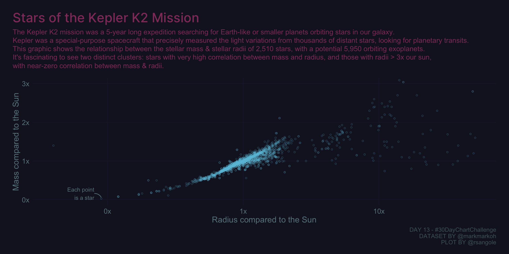

Visualizing Correlations
Visualization
Correlation plot for Kepler’s Planets, for day 13 of the 2021 30-day-chart-challenge
library(tidyverse)
library(ggplot2)
library(ggdark)
library(ggtext)
library(ggforce)
# https://data.world/markmarkoh/kepler-confirmed-planets
dat <- data.table::fread("planets.csv")
hull_a <- dat %>%
select(st_rad, st_mass) %>%
filter(st_rad > 0.335 & st_rad < 2.95 & st_mass < 2) %>%
tidyr::drop_na()
cor_a <- scales::label_number(accuracy = 0.01)(cor(hull_a)[1, 2])
hull_b <- dat %>%
select(st_rad, st_mass) %>%
filter(st_rad > 2.95) %>%
tidyr::drop_na()
cor_b <- scales::label_number(accuracy = 0.01)(cor(hull_b)[1,2])
# https://coolors.co/1c1f35-151728-44243e-723054-68838c-4e636a-4ab6d3
pt_color <- "#6BC3DB"
hull_color <- "#68838C"
axis_text_color <- "#68838C"
caption_color <- "#4E636A"
grid_color <- "#1C1F35"
plot_title_color <- "#903C6A"
bg_color <- "#151728"
dat %>%
ggplot(aes(x = st_rad, y = st_mass)) +
geom_point(
colour = pt_color,
pch = 21,
size = 1,
alpha = 0.3
) +
geom_mark_hull(
data = hull_a,
aes(label = glue::glue("Group A\nCorr: {cor_a}")),
concavity = 10,
color = hull_color,
size = 0.3,
radius = .02,
con.cap = 0,
con.colour = hull_color,
con.border = "none",
label.fill = bg_color,
label.colour = hull_color,
label.margin = margin(1, 1, 1, 1, "mm")
) +
geom_mark_hull(
data = hull_b,
aes(label = glue::glue("Group B\nCorr: {cor_b}")),
concavity = 10,
color = hull_color,
size = 0.3,
radius = .02,
con.cap = 0,
con.colour = hull_color,
con.border = "none",
label.fill = bg_color,
label.colour = hull_color,
label.margin = margin(1, 1, 1, 1, "mm")
) +
annotate(
geom = "curve",
xend = 0.09,
yend = 0.06,
x = 0.09 - 0.01,
y = 0.06 + 0.1,
curvature = -.3,
arrow = arrow(length = unit(0, "mm")),
color = hull_color
) +
annotate(
geom = "text",
x = 0.09 - 0.01,
y = 0.06 + 0.1,
label = "Each point\nis a star",
hjust = "right",
size = 3.4,
color = hull_color
) +
scale_x_continuous(trans = "log10",
labels =
scales::label_number(suffix = "x",
accuracy = 1,)) +
scale_y_continuous(labels =
scales::label_number(suffix = "x",
accuracy = 1,)) +
dark_theme_minimal() +
coord_cartesian(ylim = c(0, 3), clip = "off") +
theme(
plot.background = element_rect(color = bg_color,
fill = bg_color),
panel.grid.minor = element_blank(),
panel.grid.major = element_line(color = grid_color),
axis.text = element_text(size = 12, color = axis_text_color),
axis.title.y = element_text(size = 14, color = axis_text_color),
axis.title.x = element_text(size = 14, color = axis_text_color),
plot.title = element_markdown(
family = "Inter-Medium",
color = plot_title_color,
size = 22,
margin = margin(0, 0, 0.5, 0, unit = "line")
),
plot.title.position = "plot",
plot.subtitle = element_markdown(
color = plot_title_color,
size = 12,
lineheight = 1.2,
margin = margin(0, 0, 1, 0, unit = "line")
),
plot.margin = margin(1.5, 1.5, 1, 1.5, unit = "line"),
legend.position = c(0.9, 0.1),
plot.caption = element_text(colour = caption_color, size = 10)
) +
labs(
x = "Radius compared to the Sun",
y = "Mass compared to the Sun",
title = "Stars of the Kepler K2 Mission",
subtitle = glue::glue("The Kepler K2 mission was a 5-year long expedition searching for Earth-like or smaller planets orbiting stars in our galaxy.<br />Kepler was a special-purpose spacecraft that precisely measured the light variations from thousands of distant stars, looking for planetary transits.<br />This graphic shows the relationship between the stellar mass & stellar radii of {n} stars, with a potential {pl_n} orbiting exoplanets.<br />It's fascinating to see two distinct clusters: stars with very high correlation between mass and radius, and those with radii > 3x our sun, <br /> with near-zero correlation between mass & radii.",
pl_n = scales::label_comma(accuracy = 10)(dat[,sum(pl_pnum)]),
n = scales::label_comma(accuracy = 10)(dat %>% count(pl_hostname) %>% nrow())),
caption = "DAY 13 - #30DayChartChallenge\nDATASET BY @markmarkoh\nPLOT BY @rsangole"
)